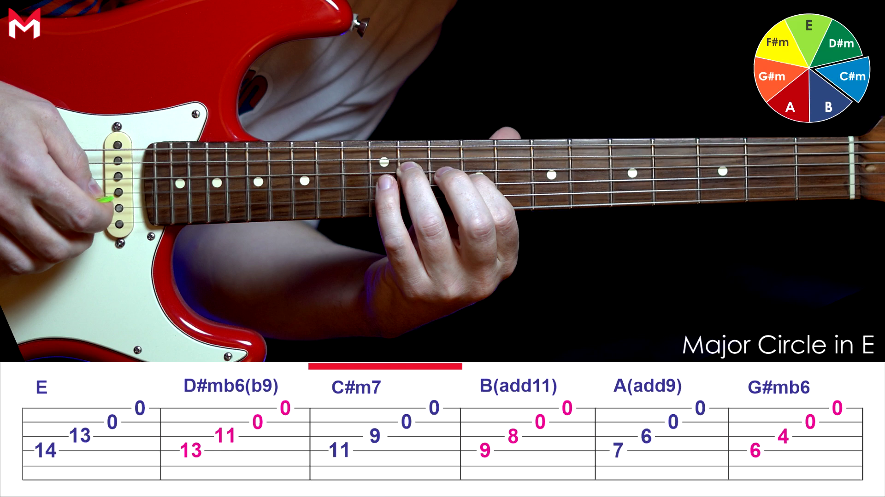

Sonic Atlas / Rhythm Game Interface
把練習做成一場會上癮的音樂任務。
這不只是音樂書庫，而是你的練功介面。吉他、Logic、DJ、MuseScore 都變成不同關卡，Lick Radar 是掃描雷達，練習紀錄是戰績板，每天打開都像進到新的回合。
Lesson Vault
這一區現在直接以你手上的教材為主。E major 系列和 Tsubasa 系列被整理成兩個優先練功包，先練這些，再往外擴素材。
PDF、圖表、影片和 GP5 檔都已經收進專案素材裡，之後這些會是 Daily Coach 和 Lick Radar 的第一優先來源。

E Major Quest Pack
主打 E 大調的和弦循環、旋律加入方式和 circle 概念，很適合直接變成你的吉他與 Logic 主練素材。
E Major
Chord Progression
Melody
Video + PDF

Tsubasa Study Pack
同一首素材同時有慢速、快速、和弦圖與 GP5，這很適合做分速練習、記譜對照和手感升級。
Tsubasa 8
Slow / Fast
Tab + Sheet
GP5
Skill Tree Sync
這一區直接吃你外接碟整理好的技能樹分類。不是概念圖而已，而是連回真實教材資料夾的練習入口。
Loading current skill tree snapshot...
Sync Pending
等待技能樹快照載入後，這裡會出現節奏、和聲、blues、jazz、riff、作品六條主幹。
Now Training
根據你整理好的資料夾，自動帶出目前最值得先練的節點。
Next Unlocks
這些是下一批最適合接上的教材，不會讓你一直只練同一條線。
Momentum Engine
把今天的練習翻成遊戲節奏：你不是在硬撐，而是在累積連擊、解一個小挑戰、把狀態推到下一段。
它會根據你的勾選和練習紀錄，算出目前節奏、今天的主線，和最適合啟動手感的任務。
Today Push
今天不是把自己逼滿，而是把手感叫醒。
先做一段最短可完成的練習，完成感會比完美更快把你帶進狀態。
Mini Challenge / 12 minutes
把一條吉他樂句做出兩個節奏變體，然後用手機錄一遍回放。
Momentum Meter
Practice Rhythm0%
Creative Momentum0%
Quest XP0 / 100
Practice Workspace
這裡是你的任務中樞。搜尋像選關，待辦像當前任務欄，紀錄像戰績回放。
搜尋、勾選狀態與練習紀錄都會存在你的瀏覽器本地端。
Search Library
目前沒有符合的內容，試試看換一個關鍵字或分類。
Today Checklist
今天要做的主線任務可以直接在這裡打勾。勾選狀態會保留下來，明天再重排也不會把今天的完成感洗掉。
Lick Radar
這裡是你的掉寶雷達。它把每天抓到的 lick 拆成可練素材，不只是「有新影片」，而是「這條值得你今天撿起來練」。
目前先做成前端可操作的抓取台：掃描、收藏、加入今日待辦。之後很容易接上真正的爬蟲來源。
Lick Sources
來源先模擬成 guitar lesson、live session、creator note 與 tab breakdown 四種。按一下就掃一輪今天的候選片段。
Local lesson vault優先吃 E major 與 Tsubasa 教材包
YouTube lesson channels抓 lick / phrasing / timing 拆解
Live session clips抓真實演奏裡的語氣與停頓
Creator notes / blogs抓練法與應用情境
Tabs / lesson snippets抓位置、節奏、可回練片段
Instagram educators先保留來源位，建議走 API 或人工審核
Practice Log
每次練完用一句話記下今天發生了什麼。久了之後，這裡會比單純打卡更有價值，因為你能看到哪種練法真的讓你進步。
用最短的格式留痕跡：主題、分鐘數、類型、今天的觀察。
New Entry
Recent Sessions
Daily Coach
每天自動抓新的教學、表演與分析內容，再把它們轉成你今天真的該練的順序。系統不是只推薦影片，而是直接幫你分配吉他、Logic 編曲、DJ、MuseScore 樂譜四條學習線。
核心判斷會同時看你的卡關點、累積進度、昨天練過什麼，以及今天適合做輸入、寫譜整理，還是偏輸出創作。
Guitar Line
主線任務是把樂句變成語言。今天優先是 E Dorian 兩個樂句變體、節拍器 72 到 92 的乾淨彈奏、再錄 20 秒即興回放檢查。
Logic Sketch
編曲線先做可完成的小段落。今天不追求整首歌，先把一個八小節 loop 做到鼓組、和弦、bass、吉他 texture 四層完整，再做一次簡單 automation。
DJ Foundations
DJ 線重點是耳朵與轉場肌肉。安排 25 分鐘做 BPM 對拍、EQ cut 練習、和兩首相近 key 的乾淨切換，最後留一段聽回放做筆記。
MuseScore Lab
把聽到的東西翻成可回看的譜面。今天用 MuseScore 記下兩小節主題、整理和弦符號與節奏切分，順手輸出一份可回練的 MusicXML 或 MIDI 草稿。
Today Runbook
45 min / Guitar Phrase Drill
暖身後直接進兩條 lick 的變奏與回放，不先看新內容，先把昨天的輸入轉成手感。
Priority A
Technique
35 min / Logic Arrangement Block
用同一組和弦完成一段 intro 到 verse 的層次推進，重點放在 mute、filter、reverb send 的變化。
Priority B
Output
25 min / DJ Transition Reps
用兩首相近能量的歌做 6 次轉場，記錄哪一次最乾淨，哪一次失去低頻控制。
Priority C
Ear Training
20 min / MuseScore Transcription Pass
把今天最有感的一條樂句記成譜，補上 chord symbol、節奏切分和兩個變體，讓靈感不只留在耳朵裡。
Priority D
Notation
Priority Engine
每天優先序會依三個條件重排：卡關度、回報率、遺忘風險。你不是永遠平均練四種，而是讓系統判斷今天最值得攻哪一塊。
GuitarFocus Now
LogicBuild Output
DJKeep Warm
ScoreCapture Ideas
Auto Search Radar
自動搜尋會把你需要的內容分成參考、拆解、任務三層。不是把網路丟給你，而是把資訊翻成今天可執行的練習。
YouTube guitar lessons / live sessions抓新 lick 與指法拆解
Logic arrangement walkthroughs抓自動化與空間編排案例
DJ set clips / transition breakdowns抓對拍、EQ 與能量銜接案例
MuseScore / notation workflows / scoring tips抓寫譜、轉譜、MusicXML 與 MIDI 整理方法
Forums / Reddit / creator notes抓常見卡點與練法修正
Phrase Archive
樂句卡不是只記錄音符，而是記錄它的手感、張力、轉位方式和它適合接在哪種和弦空間裡。
每張卡都像設計書庫裡的一本書，有名字、有語氣、有拆解、有延伸關聯。
Amber Bend Cascade
從 9th position 下滑到根音，帶一點藍調彎音，但尾巴保留 neo-soul 的懸浮感。
E Dorian
Slide
Warm Delay
e
b
g
d
a
e
Glass Roof Octaves
八度移動的主題樂句，適合用在副歌前的拉開視野，也適合切成 sample 重組。
A Major
Octave
Hook
e
b
g
d
a
e
Midnight Harmonic Thread
泛音與空弦殘響混在一起，適合當 intro 質地，或當 bridge 裡的呼吸空間。
Harmonics
Ambient
Open String
e
b
g
d
a
e
Phrase DNA
Melodic82
Tension63
Bend Use48
Loopability91
Usage Notes
這一區不是樂理教科書，而是編曲判斷。像是「適合 chorus 前一拍進」、「跟 Rhodes 疊會變暖」、「延音別太滿，留給 vocal 進場」。
Pre-Chorus Lift
Tape Echo
Double Track
Related Threads
從同一種手感往外擴散：John Mayer 式懸浮、Khruangbin 式乾淨線條、city pop 式和弦滑行。
Chord Lexicon
和弦進行不是只有 Roman numerals，而是它會帶出什麼情緒弧線、給吉他什麼 voicing 空間、讓 groove 往哪裡傾斜。
這裡像編曲人的和弦字典，也像 DJ 對 energy flow 的索引表。
Imaj7 → III7 → vi9 → ii13
明亮開場後突然帶一點都市夜色，常見於 neo-soul、city pop、R&B 轉場。吉他適合用 close voicing 加滑音。
Silky
Late Sunset
Voice-leading
i7 → bVIImaj7 → iv9 → V7sus
這條線比較電影感，適合鋪情緒而不急著解決。吉他樂句可以避開三度，多用 9th 和 11th 保留空氣。
Moody
Open Ending
Dorian
IV → V → iii → vi
流行性很高，但如果把節奏切碎、低音延後，會從常見套路變成很能用的 hook bed。
Lift
Hook-ready
Pop Frame
Flow Mapping
把吉他樂句、和弦進行與編曲段落放進同一條情緒曲線裡，你就會知道哪些片段該收藏，哪些片段其實是同一個宇宙。
這裡是從 library 走向創作的地方。
Intro Texture
Verse Motif
Pre-Chorus Tension
Hook Release
把 `Amber Bend Cascade` 放在第二段 verse 尾端，會讓主歌不是重複，而是微微抬頭。
如果主和弦走 `i7 → bVIImaj7`，樂句避免太早落根音，會保留空間讓 bass 說話。
同一條旋律做成 clean guitar、muted pluck、reverse texture，就能從單一卡片長成一整段編曲。
Archive Tags
讓你不是只靠曲風找素材，而是能靠「雨後柏油路」、「微失真暖音箱」、「副歌前的視線打開」這種創作語言來找東西。
Humid Night
低飽和、黏性 groove、混響留長尾，適合 city soul 與慢速電子。
Ghost Slides
不把滑音當特效，而是當句子裡的呼吸，特別適合樂句銜接。
Hook Before Hook
正式副歌前先給一個半揭露的 motif，讓真正主題進來時更有重量。
Analog Glow
像錄音室裡微黃的燈，tone 不求亮，而求剛好被手指磨過。
Score Workflow
MuseScore 在這套系統裡不是單純打譜，而是把吉他樂句、和弦與編曲想法變成可以回看、可以交換、可以重新編配的結構化素材。
根據 `musescore/MuseScore` 官方 repo，它很適合承接 MusicXML、MIDI、樂譜編排與回放這一層。
Phrase to Score
把今天練的 lick 寫成節奏明確的譜面，標出 slide、bend、rest 與重音，讓吉他語言能被反覆拆解。
Notation
Technique
Harmony to MusicXML
把和弦進行存成可交換的 MusicXML，之後可回到 MuseScore 校對，也能再丟回編曲流程裡延伸。
MusicXML
Archive
MIDI Bridge to Logic
從譜面輸出 MIDI 進 `Logic`，把寫譜時的骨架直接轉成編曲草圖，少掉重複輸入。
MIDI
Logic Bridge